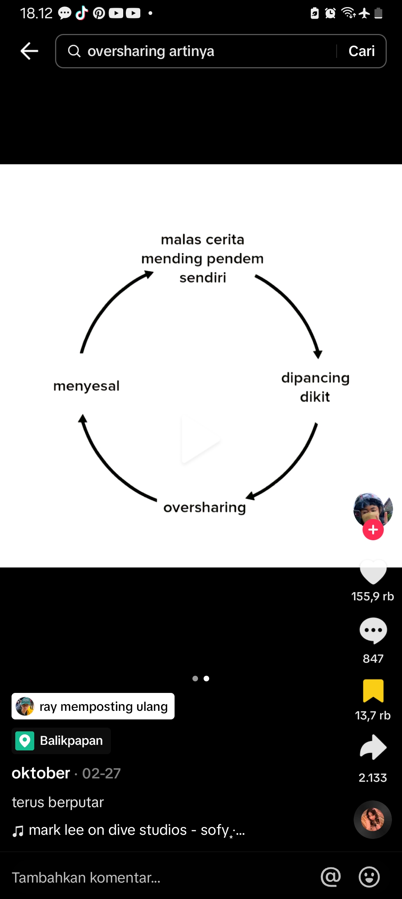

Darling, this is for you 💖
I dont say "Happy Birthday"
but...
Hari ini, saya langitkan semua doa terbaik saya untuk kamu. Semoga hal-hal yang membuat kamu runtuh turut menjadi alasan kamu untuk tumbuh. Semoga dunia senantiasa menjaga kamu di mana pun kamu berada. Semoga hari-hari kamu selalu diiringi cinta yang tidak pernah ada batasnya. Dan semoga, senyum kedua orang tua kamu yang selalu kamu usahakan itu kini sudah terlaksana.
The story of a long journey to Happiness
a simple prize for you
remember this day, first time i date you haha, keinget pas masih cangung cangungnya. ngobrolin tentang mau lanjut sekolah kemana sambil makan mie ayam, sambil gua tunjukim codingan bunga itu. dan sayangnya pulangnya ujann.
aku disitu merasa bersalah banget tau, manaan abis dari situ respon kamu ke aku. aku merasa apakah ini tanda aku di tolak?, selalu terbayang pikiran itu sampe sampe aku ganggu kamu. dan jatuhnya sampe ilfel, aku merasa bersalah dan aku pikir "masa segini doang perjuangan gua". aku berusaha lebih baik dan nyatanya sedikit berhasil. sampe sampe aku ajak fotbar ngga mau, lama lama mau juga. dan pasti kamu ngga expect aku kasih hadiah kecil kecilan kayak gituu
hampir satu bulan lebih aku ngajak kamu keluar lagi, tapi kamu kayak ngga mau gitu. aku pasrah dengan keadaan itu. respon kamu sedikit makin cuek, dan apa? kata kamu respon kamu ke cowo cowo juga gtu. tapi. menurut aku itu ngga, agak beda aja gitu repon gw kamu ke aku. dan sehabis ulangan akhir semester akhirnya lu ngga nolak ajakan gua untuk keluar lagi
karena tau besoknya kamu kamu pulang kekampung, aku buru buru ngajakin kamu keluar lagi, dan akhirnya kamu setuju akan ajakan itu. disitu aku seneng banget tau, kita makan gacoan. saking kepedesan dan kekeyangan karena nunggunya lumayan lama. jadi ngga abis deh wkwkkw
beberapa hari kamu di kampung, ada rentan hari 3 hari kamu cuekin aku. disitu aku mikir apakah aku ada salah? 3 hari itu aku binging mau ngejalanin hari gimana. udah ngga semangat lagi hidup gituu, main keluar ama temen terus, sampe sampe agak ngga enak karena muka gua murung terus. di tanggal 30 desember akhirnya kamu bales, aku tanyain kenapa tapi alasan kamu males balesin chat orang. aku pikir apakah aku ngga sepenting itu? ternyata aku baru nyadar juga, aku masih kamu anggap hanya temen sekelas. dan ya aku ngga bisa apa apa di hal itu.
aku tau ngomel ngomel ngga jelas. selalu minta kepastian terus terus an itu ngga normal buat orang yang baru deket belum lama. tetapi aku punya trauma di situ. aku boleh jujur kan? nanti aku ceritain kenapa itu bisa terjadi.
setelah desember aku masih bingung akan semua yang terjadi itu. dan aku masih agak males aja jalanin hari hari sumpah.
dan akhirnya hari oc ke jogja tiba, saat saat yg aku ngga sabar buat ketemu sama kamu. di hari pertama aku malah mabok dan masuk angin. di situ aku merasa bukan laki laki, kayak gitu aja lgsg drop. sakit banget rasanya ngga mau makan sekalinya makan mual banget, dikit dikit keluar terus muntahnya (maaf). setelah sampai di kampoeng ulu, badan aku msh belum fit. rasanya kayak lemes banget semuanya, manaan kamu ngeliat aku kayak gimana gitu. malu banget asli. sampe sampe kamu ngeliat aku kayak gitu. rasanya pasti kamu bakal ilfeel ke aku.
seneng rasanya di khawatirin kamu, sampe sampe ditanya "gapapa bal?" "sampe di tawarin ke klinik gitu". nahh pas kamu tamya disitu badan aku mulai sedikit mendingan, karena udah istirahat.
sebelum nonton pentas, aku mau sholat ngeliat cewe kayak aku kenal, tanyata itu kamu make kacamata, dalam hati lgsg nyebut "masyaAllah cantik amat anjr" mau nonton pentas tapi ujan jadinya badan aku kedinginan. karena ngga ada temen pas nonton jadinya keluar buat nyari udara seger. karena ujan nyari kamu di dalem apa ngganya susah karena rame. aku chat ngga di bales, yaudah aku tungguin kamu di tungguin depan pintu masuknya. aku kasih kamu hodie tapi kamu nolak terus, aku kejar aja terus untungnya kamu mau. pas di bis ternyata aku ngga ada jaket lagi. yaudah untungnya ada temen yg jaketnya ngga kepake aku pinjem aja deh
pas nyampe di homestay kamu maksa aku buat nungguin karena mau ngebalikin hodienya, padahal aku bisa kan nyamperin rumahnya. yaudah aku turutin aja, pas di homestay malem malem mau nyari angin ama fahri malah dikira nyariin kamu, tapi ngga ada salahnya sih. manaan lgsg lari gitu wkwkwk. sampe sampe aku di bilang miss yeti boongan loh sakitnya, karena keluar malem malem. pas jum'at kamu bilang perut kamu sakit karena hari pertama haid, yaudah ngga pake lama aku bilang aja mau bawain koper kamu, tapi kamunya nolak terus. aku ngga peduliin aja deh. pdhal emang pengen bantu aja. soalnya pasti sakit banget itu
pas lava tour inget banget, kamu sampe kesasar gitu wkwkwk. manaan panik banget ketinggalan temen. untung masih di tungguin tuh. agak panik sedikit karena depi panik kamunya ilang. untungnya ketemu deh, btw msh kesimpen ngga foto yg aku kasih? mau liat dong kapan kapannn
saat di malioboro itu saat saat yang paling kamu inget dan bikin seneng. karena bisa ngobrol ama kamu, agak kesel dikit sih karena kamu malah mau gabung ama depi, naro. kayak gimana yaa, cemburu aja gitu kan aku mau pengen berdua aja gitu ama kamu. seneng banget bisa couplean gelang, walaupun rusak sih gelangnya. nanti deh aku beliin lagi. duit aku agak pas pas an soalnya maaf ya ketemu aku yang pas pas an mulu wkwkwk.
abis oc respon kamu jauh berbeda dari sebelumnya. mungkin ada lah perlakuan yang masih sama. tetapi hal kecil itu bikin gua seneng, dan akhirnya aku ngajak kamu nonton film. kamunya mau aku seneng banget tau. jauh jauh hari aku rencanain mau nembak kamu karena aku pikir momentnya pas nih. karena ada perkataan kamu yang buat aku pede lah. nahh aku kepikiran buat nembaknya pake boneka ama bucket bunga gitu, bonekanya sengaja kecil. biar pas aja gitu di jok motor, mau beli bucket yg bunganya asli ngga tau dimana. mau nyari belum berani jauh jauh. yaudah deh beli bucket bunga itu aja karena lucu.
pas mau nonton akunya malah telat jemputnyaa, malahan salah jalan gituu maaf yaaaa. jadi malem bangett pulangnya. merasa salah banget disituu, buat nebus kesalahan itu aku beraniin ijin aja ama ayah kamu, walaupun di telfon doang sihh. manaan pas nonton ngeliat kamu lucu banget make baju ituu cocokkk banget asliiii
pas pulangnya aku sempetin sebelum pulang ke rumahh, biar ngga kelamaan lgsg aku kasih aja di depan rumah kamu wkwkwk
i was really very happy because you agreed my confession. aku pikir aku bakal di tolak anjr wkwk, udah pasrah sih aslinya. ternyata pikiran aku beda ama kenyataannya aku seneng banget di situ. sampe sampe kayak ngga percaya gitu kamu nerimaa.
besoknya masih ngga percaya aja gituu sampe sampe kyk "hah beneran nih?"
pas hari senin sampe jum'at aku masih kaget ternyata perlakuan kamu masih ngga jauh beda ama sebelum kita pacaran. sakit sih emang, gua juga bingunh mau gimana. terutama pas ngegym dan seterusnya. di pikiran aku itu "gua pacarnya apa bukan sih? kok responya gitu".
apalagi setelah kamu kasih tau mau main ama temen kamu tapi aslinya kita udah ada janji, yg waktu ke pancong itu. disitu udah kecewa banget apalagi kemarinnya itu ngga jadi karena kamu ketiduran. udah mood aku jelek banget di hari itu, tetapi semua terbayarkan lunas karena beberapa minggu kemudian kita main.
aku sebutkan semua rasa kecewa ke kamu, biar akunya tenang. maaf yaa, ternyata akunya terlalu egois, aku gapapa kok tentang itu, karena semua nya terbayarkan di bulan ini karena sering ketemu terus wkwkwk. aku mau nanya dehh, kamu terpaksa ngga kalo aku ajak main terus? kalo iyaa kasih tauu okayy?
dan rasanya gimana yaa, kalau perlakuan kamu agak beda dengan apa yang udah aku lakuin, aku bukannya nuntut kamu harus balas budi apa gimana. itu pure kemauan aku kamu ngga usah pikirin, tetapi rasanya kalau pengen sesuatu yg di sampai-in atau sekedar pengen cerita / ngobrol di judesin atau dicuekin gtu rasanya ngga banget tau. yaa kalau emg kamunya ngga mood cukup bilang kokk.
Darling, Love youuu
No matter what, I will always try to give you the best version of myself. Please don't get tired of teaching me & guiding me, because I always want to learn to go through many good/bad days with you so that we can survive. This is me with my best version along with all my shortcomings to decorate it.
maaf cuma segini yang bisa aku kasihh, di jaga yaa bunganyaa ama semoga kepake deh dompetnyaa. mau ngadoin apa lagi bingungg, yauda itu dulu ajaa. mau nabung duit aku lagi sering kepake belakangan inii. oiya mau liat proses bikin bunganya? nanti kasih tau aja yaa
oiyaa satu lagi nihh ada sesuatu buat kamu ngga seberapa sihh semoga suka deh
I'm sorry for making you tired during this relationship with me and I also want to say thank you all this time for your never-ending patience, even though my character and attitude often make you dizzy or even tired hehe.
I don't want to expect much, but I want us to be both strong, so we can carry on this relationship whatever happens, never leave each other.
Tolong terus libatkan aku di dalam setiap proses yang kamu lalui. Bawa aku, ajak aku, repotin aku dalam hal apapun itu. Aku mau jadi orang pertama yang kamu cari ketika kamu butuh, jangan pernah merasa sendiri dan jangan sungkan. Libatkan aku juga ketika kamu lagi ada masalah, ga adil rasanya ketika kita bisa tertawa bersama, tapi ketika kamu sedih kamu sendirian.
the nethink always i thinking is "do you really love me". itu selalu terpikirkan oleh aku, itu terlihat egois memang. tetapi apakah aku tidak bisa mendapat cinta yang aku mau?. hanya saja aku cuma ingin di perhatikan oleh mu. aku ngga maksa kokk, cukup jadi diri sendiri ajaa apa yang kamu mau okee?
mungkin aku terlalu terobsesi, mungkin aku terlalu memaksakan diri kamu, aku minta maaf. aku ingin melepaskan semua seperti sesuatu yang aku ngga suka, sesuatu yang aku paksakan, sesuatu yang membuat aku harus terlihat kuat. aku ingin menceritakan ke kamu, menceritakan semua kelah kesah ku dan ingin manja ke kamu.
I don't know, I can't explain it in more detail, sorry, I know, sometimes I'm not the best in your eyes. I'm just still a burden on my parents and grew up full of the wounds I got hehe.
i know i'm not the perfect guy i actually kinda hate myself all the time. but when i'm with you i uh don't hate myself, i like being around you & i don't know if i ever told u that in some many words, so im telling you.
I don't know whether I'll be able to do it or not if you leave me hehe. There's nothing I can be proud of about myself, let alone my family:'))
I know darling, I don't know how to hope anymore, I don't want to hope too much, you still want to accept me, thank God, if not, tell me from now on, darling, so I can know myself hehe I feel so much wrong with you that I think I can't respond to kindness. I love you so much I love you so much.
mungkin aku terlalu terobsesi. aku minta maaf dan cara ku pasti berbeda dengan seseorang yang kamu mau. aku tahu tetapi, aku masih berusaha untuk mencapai titik terbaik aku. "proses ini terlalu lama" pikiran selalu teringat akan hal itu. tetapi aku harap kamu mau untuk menunggu aku akan hal itu. i know i treating you so badly. it's always my fault sorry.
i maybe not ur first boy
not the first boy you were attracted to
or not the first you boy called hadsome
But you will always be my first in so many things, first girl that I want to fight for, first girl who change my behaviour and perspective, first girl that makes me feel important, appreciated, and loved. Thankyou for staying with me even tho i've alot of deficiency.
i always say my love languange is quality time, but lately words of affirmation is what i need, i like being told that i'm enough, that i'm loved, i want to know how much i mean to you and how much you care. I love detailed explanations cause i overthink most situations, i love being told that i look good or that i'm doing great when i'm struggling. words have so much impact.
I'm sorry, I'm too selfish, I often get angry at you and sometimes I ignore you just because I'm jealous and misunderstand. We often fight, I don't know why now, I get emotional, so I get jealous easily because of small things. Maybe my love for you is too much.
I'm just afraid of you leaving, I'm afraid you'll get bored with me just because of my unclear attitude, I'm afraid you'll be bored until you end up asking to separate. I'm afraid of everything I'm afraid of happening. I'm sorry for always thinking about my own ego, without thinking about your feelings. I beg you, don't leave me, I'm not ready to lose you, don't ever get bored.
If you're bored, don't think about ending it all. We fight!!!, Boredom is only temporary, don't just choose to leave me because you're bored. Lately I've been incuring a lot, I don't know why I feel like I'm coming back, I feel like I'm not worthy of anyone.
I know you're so tired of hearing me apologize, but I told you something, right? it's better to apologize than to lose you, you are my world.
My world is small and quiet too, because the only inhabitant is you, I hope you understand some of the things I said above, I also want us to continue to be good, I love you, I really love you, nothing has changed about me, I always love you. , you are my favorite person
aku bukan laki laki yang pintar dalam memahami bagaimana cara berfikirmu, bukan juga laki laki yang hebat dalam memberi rasa nyaman, dan bukan laki laki menyenangkan yang bisa memberimu berbagai kejutan indah. tapi jika kamu mengira selama ini aku tidak pernah peduli denganmu, kamu salah, hal kecil yang terjadi padamu saja aku selalu berfikir bagaimana cara menyikapinya dengan baik. aku selalum memperhatikan mu dengan cara yang mungkin berbeda dari laki laki pada umumnya. tapi percayalah, aku tulus melakukan segalanya untukmu.
maybe im too annoying
or too clingy
or loud
or maybe i just wanna be with someone who keep me soft, i'm tired of acting like i'm strong
ngeliat cowo yang selalu dibujuk sebegitunya, dikasih sesuatu yang dia suka, dimanjain, bahkan disamperin kalo lagi marah, and wish that it was me(sorryyy)
hal yang ingin kuketahui, tapi aku takut bertanya
apakah aku membuatmu bahagia atau kamu hanya pura-pura menerima aku apa adanya?
apakah kamu benar-benar bersungguh-sungguh dengan semua yang kamu katakan padaku? apakah aku pernah menjadi bagian dari rencana hidupmu atau hanya menjadi penumpang?
akan kah kehilangan aku akan menyakitimu?
jika kamu memerlukan bantuan, apakah kamu menganggap aku sebagai seseorang yang dapat kamu andalkan?
huftttt terlalu banyak yang ingin aku tanyakan hingga sepertinya susah untuk di ungkapkann, yaaa itu untuk nanti sajaa, i want tell you some thing
-------->
if i win the lottery
oh waitt...
i already didd !!!
mau tau gaaa?
i love 3 things love you :3
1. your eyes
2. your smile
3........
------>
3. your are the best ever 4. your name 5. your personality 6. your laugh 7. your hands 8. your voice 9. your embrace 10. your joy 11. your tears 12. your nose 13. 13. your face 14. 14. your kindness 15. your effection 16. our relationship 17. your love 18. your hugs 19. your message 20. your style 21. your forgiveness 22. your acne fight 23. watching videos u send to me 24. the memories we made 25. the way me met somewhere and are so close now 26. the time we spend together 26. the jokes we make together 27. the way you love someone like me 28. the smell of u 29. the thought of u 30. the sound of u 31. the selfishness 32. how i can talk to u and still not get bored 33. you strength (u are very strength) 34. your bravery 35. your trusting 36. your positivity 37. your respectable 38. your ceativity 39. your patience 40. your passion 41. your intelligence 42. i believe everything u will say to me 43. i can listen to u without getting annoying 44. i can be myself around u 45. my dreams about u 46. the fact that there is no downside about u 47. i feel safe around u 48. you are trustworthy 49. you always light up my day 50. i dont need no light to see ur shine 51. you are constantly on my mind 52. you are very independent 53. you are incredible 54. you're supportive 55. you're honest 56. you will never let me down 57. i can trust u with my secret 58. well you're ABSOLUTELY GEORGEOUS! 59. you can cheer me up 60. you're adorable 61. your humour never fails to make me laugh 62. you're literally the definition of perfection 63. i feel like im able to vent to you without feeling bad 64. you bring a huge smile to my face whenever i talk to u
65. you make me feel like im actually important 66. you love the real me 67. you care for someone like me 68. always with me in my bad days 69. i love that you call me BALLL ("L" NYA DI PANJANGINNN) or SAYANG KUU ("U" NYA DI PANJANGIN 70. i love that you still give me butterflies 71. i love the special moment we share 72. i love how we imagine an amazing future together 73. you're so sweet 74. you look at me and make me feel wanted and loved 75. you have a way of always making me melt 76. you make time for me 77. you take good care of me 78. your comfort 79. i love how you support me in anything and everything 80. i love how much you love me 81. i love your sweet face 82. your romance 83. your forgive me quickly 84. i love ur moodswing 85. the way you hold my hand so tight 86. how you always know what to say when i get mad at u 87. you're everything for me 88. you tell me im handsome 89. you love me when i dont believe in love 90. you're the best thing thats ever been mine 91. yourself 92. yourself 93. yourself 94. yourself 95. yourself 96. yourself 97. yourself 98. yourself 99. yourself 100. SIFAT CUEK LU AMA JAGA IMAGE KE GUAAA
im sorry to see you repost butt
i hate thiss woyyy, kalo kamu mau cerita cerita ajaaa. mau oversharing gapapaaa tenang ajaa lu bisa cerita apapun ke gua. tenang ajaa okayyy? gua ngga bakalan pergi kokkk, gua akan tetep disiniii. cerita teruss selama yang lu butuhh, gua pasti tetep nemenin lu okayy? percaya sama guaaa!?!?!?
karena ituu membuatku berfikir bahwa
did i make it?
i mean
Did i make you happy? Did i make you feel safe? Did i make you feel loved? Did i make you see your worth? Did i treat u the way u always wanted to be treated? Did i do a good job showing my love for you?
if you know
I love you. I love you more than anything. I love you more than myself. I will always love you. I will love you till the end of my time. No words can express how much I love you. I will always be here for you no matter what. I will stay.
kenapa aku selalu ingin chat nya di bales?
wanna know something? every time you text me, that heals me.
maaf
cara aku nge treat kamuu berbeda sama masalalu kamu, aku yaa aku dia ya dia, jadi kalo kamu mau aku seperti masalalu kamu aku gabisa maaf
tetapiii
can i get love like you love your past?
sorryyy
do you want to know, my biggest fear is?
"dapetin semua yang lo mau dari cowo tapi bukan dia:("
"kalo semisal ada orng yang jauh lebih sempurna dari aku lalu dia menyukaimu, apa kamu masih tetap memilihku?"
"Kalo pas sm kmu aku gabanyak jajannya, gk banyak mampir sana sini brarti bukan km orgnya."
and if you don't know
"oh so you noticed my attitude but not your actions that caused it? ok lol"
aku tau ini semua pikiran buruk ku, tapi aku ingin mencurahkan semuanya. agar aku tau aku bisa memperbaiki diri dari mana. makasih yaa
the last one
1. Apa yang perlu diperbaiki dari cara bicaraku?
2. Menurutmu, aku sudah jadi pendengar yang baik atau belum?
3. Kapan waktu yang tepat untuk ngobrolin hal-hal yang penting?
4. Apa yang perlu diperbaiki dalam komunikasi kita?
5. Apa yang perlu aku lakukan agar kamu merasa nyaman saat cerita?
6. Apa hal-hal yang menurutmu penting tapi belum pernah kita obrolkan?
7. Topik apa yang suka bikin kamu ngga nyaman ?
8. Hal apa yang belum sempat kamu ungkapin ke aku?
9. Apa masalah dalam hubungan nyaris belum sempat kita selesaikan!
10. Apa sikap yang harus aku perbaiki dan yang bikin kamu ngga nyaman?
aku pengen kamu jawab pertanyaan ini dehh, hehe
I'm sorry if my efforts are not enough to make you believe that i really appreciate you soo fcking much
maaf yaa segini doang hadiahnyaa. sekali lagi selamat ulang tahun Raya!?. semoga suka dengan hadiahnyaa, dan makasih udah dateng ke kehidupan akuu.... :3